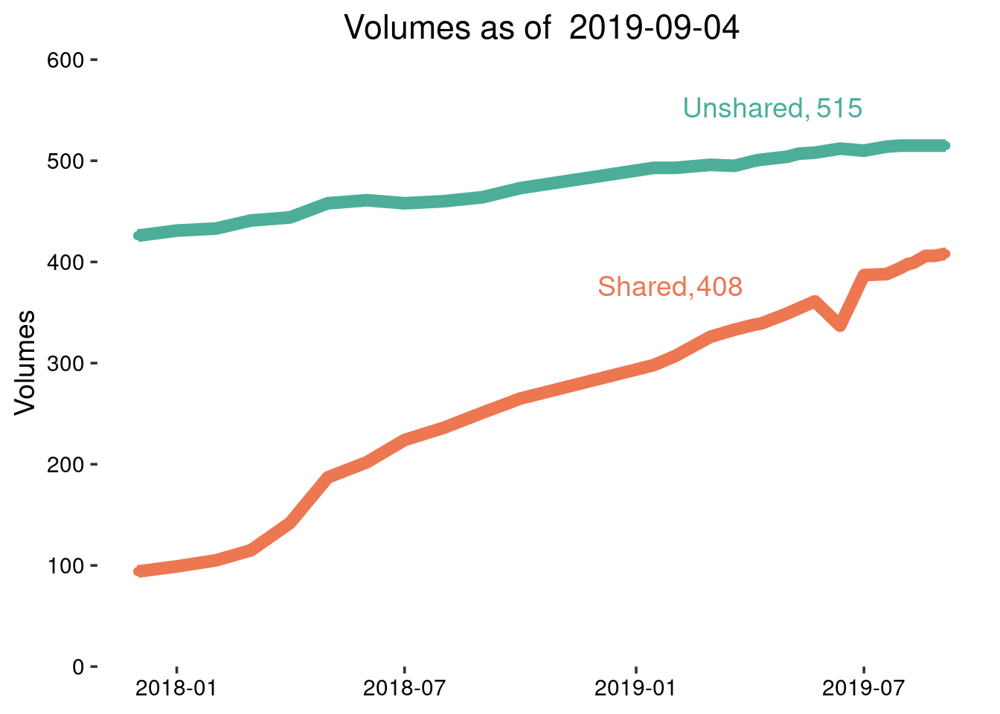
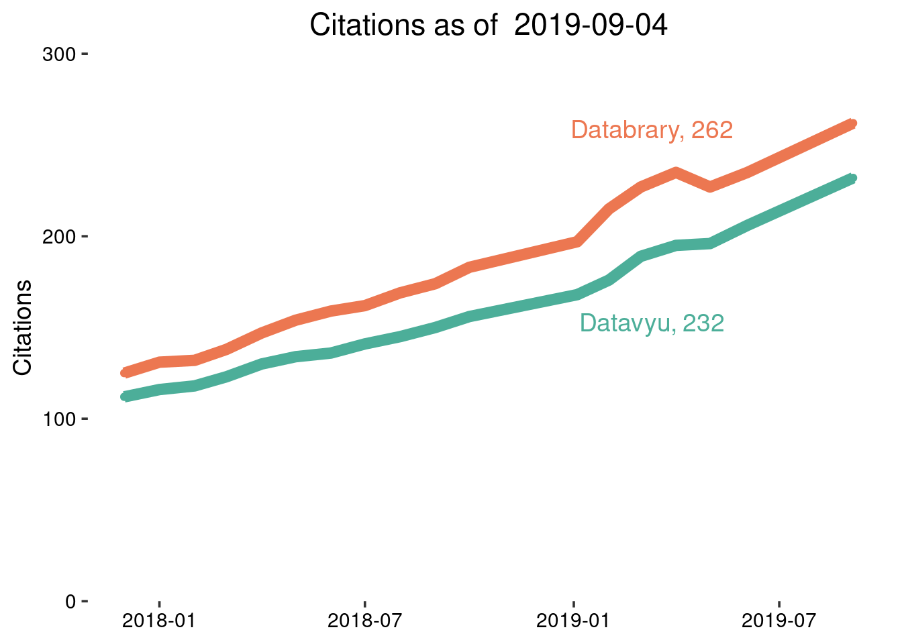

new_stats <- databraryapi::get_db_stats()
new_stats$date <- lubridate::as_datetime(new_stats$date)#key <- "1tvlIQzULrMtXo97aJu71ljdTmNXkwwpU9eOOasVer3g"
db <- gs_title('Databrary-analytics')old_stats <- db %>%
gs_read(ws = 'institutions-investigators')# initialize updated_stats
updated_stats <- old_stats
if (as.logical(params$update_stats)) {
next_entry <- dim(updated_stats)[1] + 1
updated_stats[next_entry,] = NA
updated_stats <- updated_stats
# fill with new data
updated_stats$date[next_entry] <- new_stats$date
updated_stats$institutions[next_entry] <- new_stats$investigators
updated_stats$investigators[next_entry] <- new_stats$investigators
updated_stats$affiliates[next_entry] <- new_stats$affiliates
}# Read from Google Sheet
old_vols <- db %>%
gs_read(ws = 'volumes-shared-unshared')updated_vols <- old_vols
if (as.logical(params$update_stats)) {
next_entry <- dim(updated_vols)[1] + 1
updated_vols[next_entry,] = NA
updated_vols$date[next_entry] <- new_stats$date
if (is.null(new_stats$datasets_shared)) {
new_stats$datasets_shared = 0
}
updated_vols$shared_volumes[next_entry] <- new_stats$datasets_shared
updated_vols$unshared_volumes[next_entry] <-
new_stats$datasets_total - new_stats$datasets_shared
}
updated_vols <- updated_vols %>%
gather(., key = "type", value = "count", -date)# Plot
vols_plot <- updated_vols %>%
ggplot(., aes(x = date, y = count, color = type, group = type)) +
geom_point() +
geom_line(size=ln_size) +
scale_colour_manual(values=c(color_orange, color_teal)) +
ggtitle(paste("Volumes as of ", Sys.Date())) +
ylab("Volumes") +
databrary_theme +
scale_y_continuous(breaks = seq(0, round_any(max(updated_vols$count), 100, ceiling), 100), expand = c(0,0)) +
coord_cartesian(ylim = c(0, round_any(max(updated_vols$count), 100, ceiling)))
ggdraw(vols_plot) +
draw_label("Unshared, ", colour = color_teal, .75, .85) +
draw_label(max(new_stats$datasets_total - new_stats$datasets_shared), colour = color_teal, .84, .85) +
draw_label(max(new_stats$datasets_shared), colour = color_orange, .72, .6) +
draw_label("Shared, ", colour = color_orange, .65, .6)
if (as.logical(params$update_gs)) {
new_data <- data_frame(date = Sys.Date(),
shared_volumes = new_stats$datasets_shared,
unshared_volumes = new_stats$datasets_total - new_stats$datasets_shared)
db <- db %>%
gs_add_row(ws = 'volumes-shared-unshared', input = new_data)
} else {
message("'update_gs' parameter is 'false', so Google Sheet data unmodified.")
}# define helper functions
new_volumes <- databraryapi::get_db_stats(type = "datasets")
if (is.null(new_volumes)) {
stop('New volumes data not downloaded.')
}
unnested_vols <- new_volumes %>%
unnest(.)
# rename(., owner_name = name1, owner_id = id1) %>%
unnested_vols$owner_name <- unnested_vols$name1
unnested_vols$owner_id = unnested_vols$name1
# Change format of owner_name
# char_split <- strsplit(unnested_vols$name1, ", ")
# mat <- matrix(unlist(char_split, ncol=2, byrow=TRUE)) #Getting error in this line but it worked previously
# char_split <- as.data.frame(mat)
# colnames(char_split) <- c("last_name", "first_name")
# char_split %>% unite(col = "full_name", first_name, last_name, sep=" ")
# char_split -> unnested_vols$owner_name
unnested_vols <- unnested_vols %>%
mutate(., url = paste0("https://nyu.databrary.org/volume/", id),
date_created = lubridate::as_date(creation))
unnested_vols %>%
select(., name, date_created, owner_name, url) %>%
knitr::kable(col.names = c("Volume Name", "Date Created", "Owner Name", "Databrary URL"))%>%
kable_styling()| Volume Name | Date Created | Owner Name | Databrary URL |
|---|---|---|---|
| DARPA Duplo | 2019-08-30 | Ossmy, Ori | https://nyu.databrary.org/volume/964 |
| DARPA Duplo | 2019-08-30 | Nez, Reda | https://nyu.databrary.org/volume/964 |
| DARPA Duplo | 2019-08-30 | Heiman, Carli Marisa | https://nyu.databrary.org/volume/964 |
| DARPA Duplo | 2019-08-30 | Adolph, Karen | https://nyu.databrary.org/volume/964 |
| DARPA Containers | 2019-08-29 | Nez, Reda | https://nyu.databrary.org/volume/963 |
| DARPA Containers | 2019-08-29 | Heiman, Carli Marisa | https://nyu.databrary.org/volume/963 |
| Head-camera study of novel word learning with 8-, 12-, and 16-month olds | 2015-01-09 | Frank, Michael C. | https://nyu.databrary.org/volume/101 |
| STEM Books | 2019-08-16 | Bauer, Patricia | https://nyu.databrary.org/volume/962 |
| STEM Books | 2019-08-16 | Hanft, Melanie | https://nyu.databrary.org/volume/962 |
# Get citation counts from Google Scholar
get_citation_stats <- function(project = 'databrary') {
if (project %in% c('databrary', 'Databrary')) {
url <- 'https://scholar.google.com/scholar?hl=en&as_sdt=1%2C39&as_vis=1&q=%22databrary%22&btnG='
} else if (project %in% c('datavyu', 'Datavyu')) {
url <- 'https://scholar.google.com/scholar?hl=en&as_sdt=1%2C39&as_vis=1&q=%22datavyu%22&btnG='
}
r <- httr::GET(url = url)
if (httr::status_code(r) == 200) {
content <- httr::content(r, 'text')
} else {
message(paste0('Download Failed, HTTP status ', httr::status_code(r)))
}
n_results <- stringr::str_match(content, pattern = "About ([0-9]+)")[2]
if (is.null(n_results)) {
message(paste0('Unable to parse results from search.'))
return(NULL)
} else {
return(as.numeric(n_results))
}
}
databrary_cites <- get_citation_stats('databrary')
datavyu_cites <- get_citation_stats('datavyu')
old_citations <- citations <- read_csv("csv/citations-monthly.csv")
next_value <- dim(old_citations)[1] + 1
citations <- old_citations
citations[next_value,] <- NA
citations$date[next_value] <- Sys.Date()
citations$databrary_citations[next_value] <- databrary_cites
citations$datavyu_citations[next_value] <- datavyu_citescitations <- citations %>%
gather(., key = "type", value = "count", -date)
# Plot
citations_plot <-
citations %>%
ggplot(., aes(x = date, y = count, color = type, group = type)) +
geom_point() +
geom_line(size = ln_size) +
scale_colour_manual(values=c(color_orange, color_teal)) +
ggtitle(paste("Citations as of ", Sys.Date())) +
ylab("Citations") +
databrary_theme +
scale_y_continuous(breaks = seq(0, round_any(max(citations$count), 100, ceiling), 100), expand = c(0,0)) +
coord_cartesian(ylim = c(0, round_any(max(citations$count), 100, ceiling)))
ggdraw(citations_plot) +
draw_label("Datavyu, ", colour = color_teal, .7, .5) +
draw_label(max(datavyu_cites), colour = color_teal, .78, .5) +
draw_label(max(databrary_cites), colour = color_orange, .79, .8) +
draw_label("Databrary, ", colour = color_orange, .7, .8)
if (as.logical(params$update_gs)) {
new_data <- data_frame(date = Sys.Date(),
databrary_citations = databrary_cites,
datavyu_citations = datavyu_cites)
db <- db %>%
gs_add_row(ws = 'citations-monthly', input = new_data)
message("'update_gs' parameter is 'TRUE', so Google Sheet data will be updated.")
} else {
message("'update_gs' parameter is 'FALSE', so Google Sheet data unmodified.")
}#{r child = 'affiliates.Rmd'} #
if (as.logical(params$update_gs)) {
db <- db %>%
gs_add_row(ws = 'institutions-investigators', input = new_stats[,c(1, 4, 2, 3)])
message("'update_gs' parameter is 'TRUE', so Google Sheet data will be updated.")
} else {
message("'update_gs' parameter is 'FALSE', so Google Sheet data unmodified.")
}